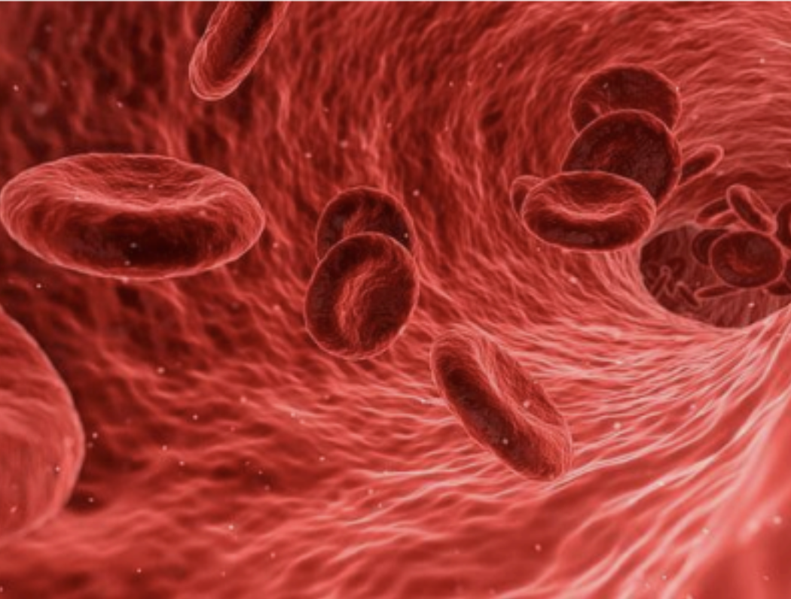
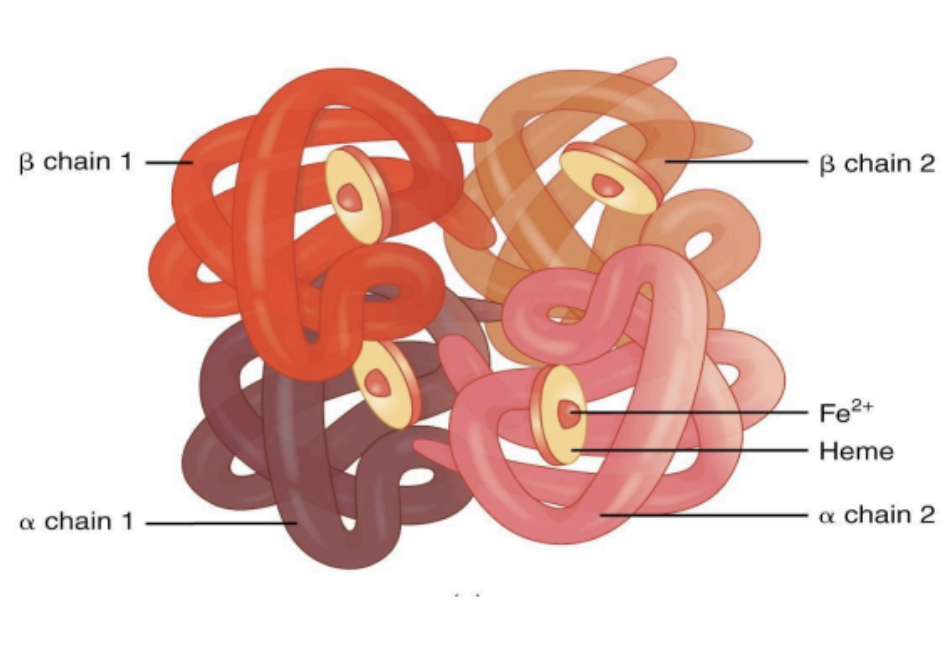
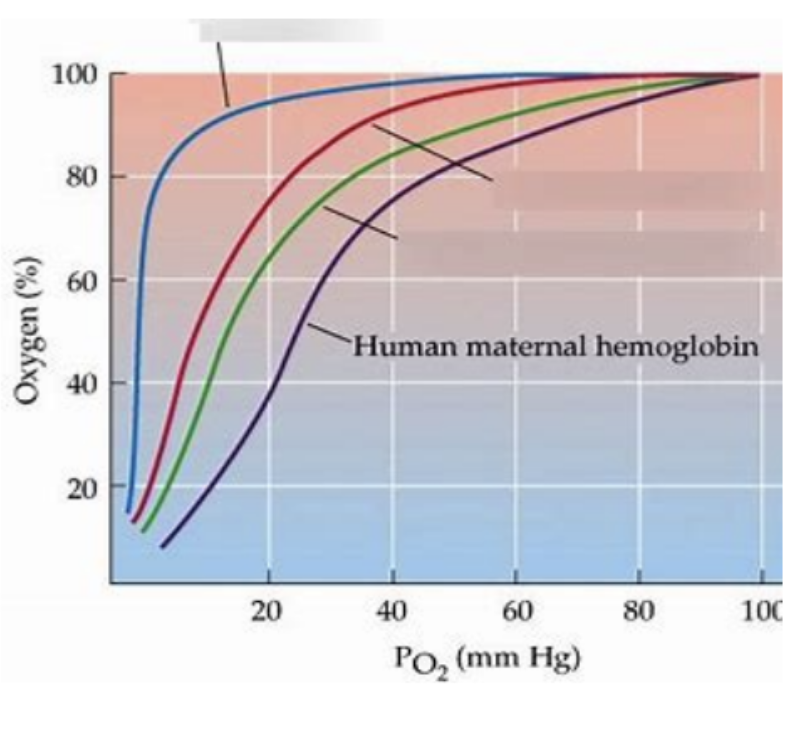
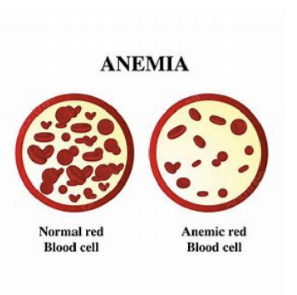

Biology • Cells
What is the most important cell and why?

Red blood cells, otherwise known as erythrocytes, are one of the most important cells in biology as they have an instrumental role in metabolic processes in all biological systems. They have a biconcave shape which maximises their surface area for efficient gas exchange and are only one cell thick which reduces the length of the diffusion pathway. This aids the quick delivery of oxygen to respiring tissues around the body. Red blood cells are also small and flexible which allows them to travel effortlessly through thin capillaries. Red blood cells also contain haemoglobin which binds to oxygen molecules and carries the oxygen around the body. Erythrocytes contain haemoglobin which is a large globular protein with a quaternary structure, made up of four polypeptide chains, two of which are alpha chains and the other two are beta chains. Each polypeptide chain contains one prosthetic group which is a non-protein, known as a haem group. Thus there are four haem groups in total and each can be bound to an oxygen molecule. Every haem group contains a ferrous iron ion which binds to the oxygen molecule and gives haemoglobin its red colour; this is because the Iron atom is oxidised.

The function of red blood cells makes them crucial for the survival for all respiring organisms as they transport and deliver oxygen through the blood to respiring tissues for aerobic respiration. This enables animals to carry out all of their metabolic reactions. This happens when haemoglobin associates with oxygen in the lungs as there is a high partial pressure of oxygen there. Thus, haemoglobin has a high affinity for oxygen in the lungs and so there is an easy association there. Red blood cells also undergo positive cooperativity to ensure all four oxygen molecules can associate to the haemoglobin. This means that after the first oxygen molecule has associated with a haem group, it changes the quaternary structure of the haemoglobin and therefore changes the shape of the haemoglobin. This change in shape allows the binding sites of the haemoglobin to relax which then makes it easier for the second and third oxygen molecules to bind to the haemoglobin. Once the haemoglobin and oxygen bind, it is known as oxyhaemoglobin which travels around the body in the blood to respiring tissues. These tissues have a low partial pressure of oxygen and a high partial pressure of carbon dioxide meaning the haemoglobin has a low affinity for oxygen and so can readily unload the oxygen for tissues to use during aerobic respiration and provide energy in the form of ATP for chemical reactions in the body.
More specifically, during oxidative phosphorylation in aerobic respiration, oxygen which is delivered to the respiring tissues by red blood cells is used as the terminal electron acceptor. Hydrogen atoms (released from reduced NAD and FAD) are split into protons and electrons. The electrons move down the electron transport chain and at each carrier they lose energy which is used to pump protons from the matrix to the intermembrane space. Protons then move down the electrochemical gradient via ATP synthase in chemiosmosis and protons combine with electrons and oxygen at the end of the electron transport chain. Erythrocytes are thus important as they allow oxidative phosphorylation to occur meaning adenosine triphosphate can be generated during cellular respiration. This energy allows for the repair of damaged cells and tissues and growth of organisms. And as organisms grow, they can then reproduce and allow a new generation to follow, this means that the food chain and ecosystems can be maintained and continue to thrive.

Another reason red blood cells are important is because they are adapted to aid different animals during aerobic respiration. The DNA base pair sequence in animals varies and so, different animals have haemoglobin molecules with different affinities for oxygen.This is due to differences in their tertiary structure. For example, lugworms are not very metabolically active and live in stagnant muddy water, in which there is a low partial pressure of oxygen. This means that the haemoglobin present in their blood must have a high affinity for oxygen. This allows the haemoglobin to load oxygen more readily even when there is little oxygen present and also means that the oxygen does not dissociate as quickly. This is due to the fact that they have a low metabolic rate and thus require little energy. In contrast to the lugworm, the common shrew has haemoglobin with a low affinity for oxygen. This is because they need more oxygen to be readily unloaded for a high rate of aerobic respiration. The common shrew also has a high surface area to volume ratio and so need to be more metabolically active to maintain their body temperature. In order to achieve this, the shrew must respire at a higher rate to provide enough energy for chemical reactions. And in order to respire at a high rate, oxygen must easily dissociate from the haemoglobin into respiring tissues. So, red blood cells are important in biology as they can have slightly different phenotypic expressions in different species which allows them to adapt to their specific environments.
Erythrocytes are also vital in biology as they remove the carbon dioxide from blood which helps to maintain the pH of the blood, the removal of carbon dioxide is also essential as if it accumulates to dangerous levels it can be life threatening. The maintenance of pH at approximately 7.40 is important as it prevents proteins found in blood from denaturing and so allows for optimal protein function. Furthermore, red blood cells are considered the most important cells because they indirectly support the immune system by maintaining blood flow which helps white blood cells circulate and reach sites of infection or injury.

In conclusion, red blood cells play a crucial role in biological systems as without the right number of them, humans can be susceptible to anemia or iron deficiency. They allow the delivery of oxygen to respiring tissues for aerobic respiration which generates ATP. Red blood cells also allow the maintenance of pH in the blood, aid white blood cells to circulate in the blood for efficient immunity and are specifically adapted to have a higher or lower affinity for oxygen in different organisms for efficient oxygen transport. Erythrocytes can also have different haemoglobin structures, therefore allowing different species to be adapted to their specific environments.
Source references:
- CGP AQA A-level Biology complete revision and practice book
- CGP AQA A-level Biology Student Book